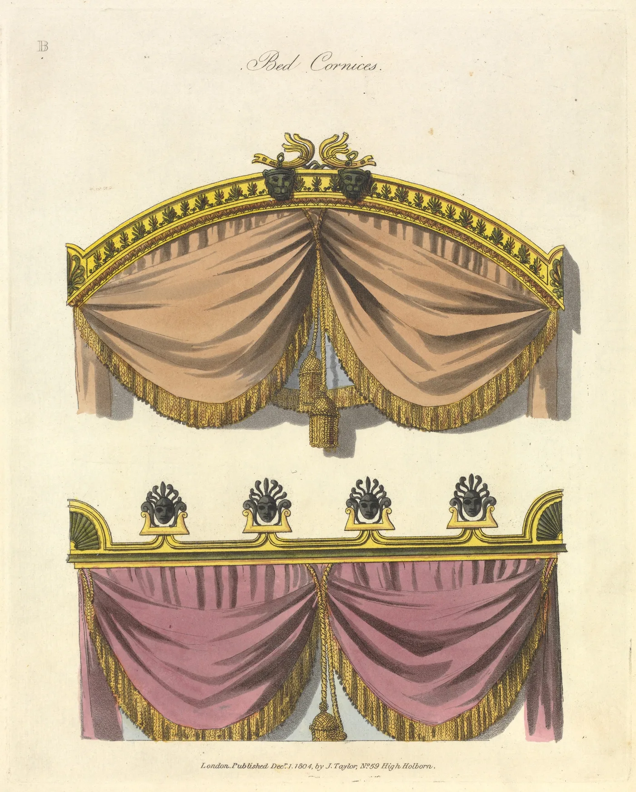
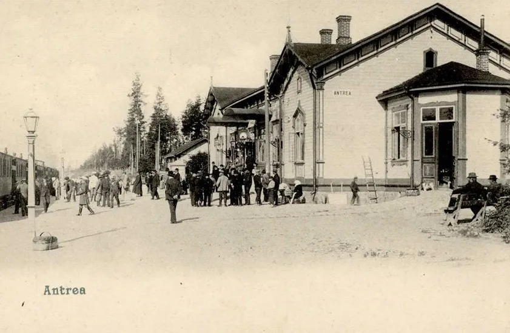
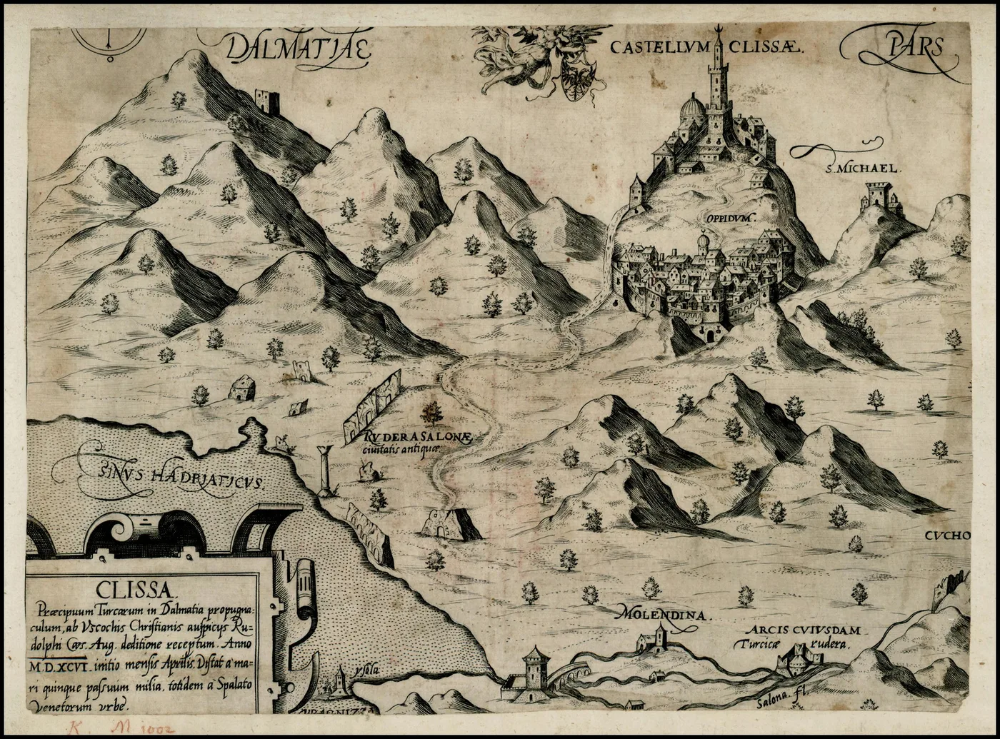
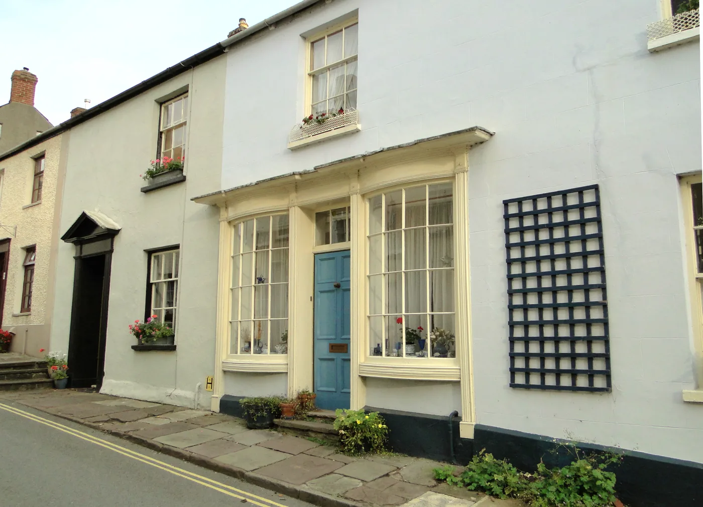
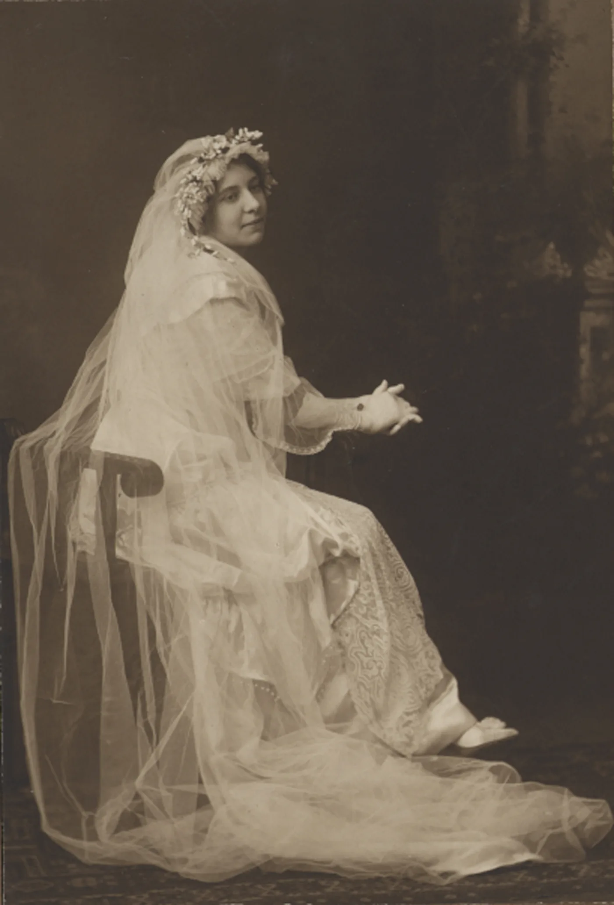

Barbara · for museums · archives · libraries
Barbara reads the digital images your collection already holds and proposes structured catalogue metadata — title, description, subjects — using only what each image shows. A cataloguer reviews and approves; approved records export cleanly to your collection system. No more invisible archives.
WORKS ON THE PHOTOS YOU ALREADY HAVE · NO RE-SCANNING

How Barbara works
Load a batch of images. Barbara analyses each one and proposes structured metadata in the fields your catalogue needs.
Each proposal is a draft. A cataloguer corrects, notes and approves — nothing ships without a human in the loop.
Approved records export as a clean CSV, ready to import into your collection, archive or publishing system.
The evidence-first rule
If an image doesn't visibly show a date or a place, Barbara leaves that field empty and says so. Museum staff trust records that admit what isn't known.
Generated records are drafts, flagged with confidence and any uncertainty, so a cataloguer catches errors before they reach your system.
Sample output — real objects already described by Barbara
Illustrative sample output from the working demo. Source images are public-domain / freely licensed from Wikimedia Commons and credited on each card. The interactive describe → review → export flow runs behind sign-in.
The workshop
Inside the workshop you can



